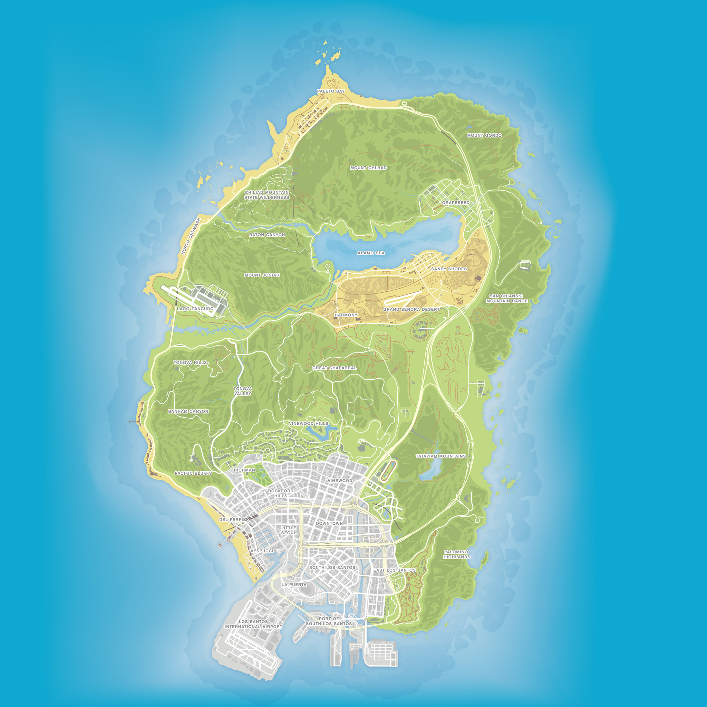

YÖNETİCİ KONTROLÜ
CANLI VERİ
Yönetici Kontrol Merkezi
Şehir altyapısı için canlı yönetim yüzeyi
BÖLGE
00
KOMUT
00
CANLI HARİTA / 01
Los Santos + Blaine Bölgesi
Enerji aktif
Kesinti
Atanmamış

2 KM
DÜNYA KOORDİNAT AĞI%100
YETKİLİ İŞLEM
Komut seçin
Sol taraftan bir yönetici işlemi seçin.
—
Hazır.
ALTYAPI KONTROLÜ
Trafo operasyonu
Operasyon seçin
BAĞLANTI
KARARLI
YETKİLİ İŞLEMLER
00 MEVCUT
İŞLEM SÜRÜYOR
00%
İşlem sürüyor
Sistem yanıtı bekleniyor
İşlem tamamlanana kadar alandan ayrılmayın.
GÜVENLİK DOĞRULAMASI
01 / 01
Güvenlik doğrulaması
Doğru tuşa zamanında basın.
E
BEKLENEN GİRDİ
E TUŞU
1,2 sn
E / R tuşlarından biri